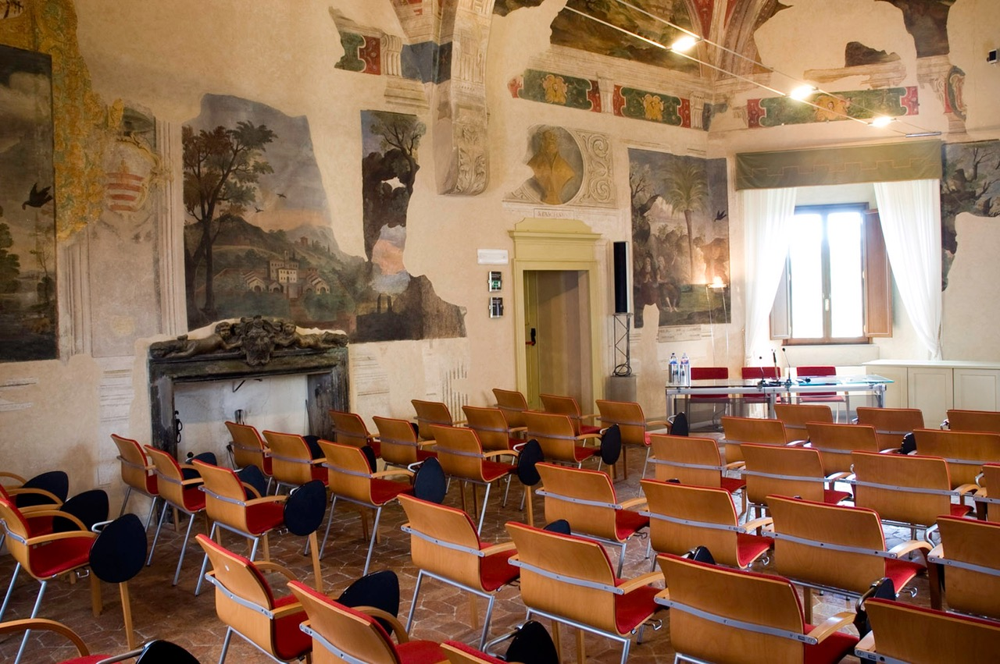
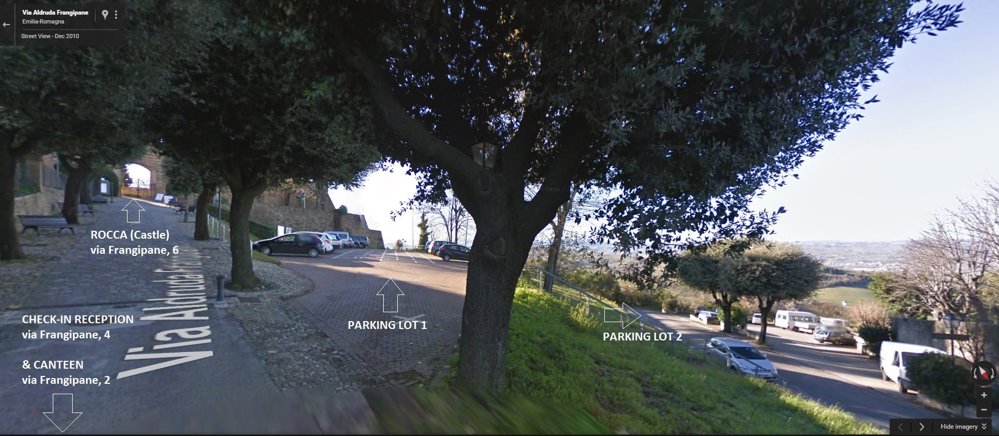

<%include file="header.inc" args="title='Lectures'"/>
<!-- Main -->
<section id="main" class="wrapper">
  <div class="container">
    <header class="major special"><h2>Location</h2><p></p></header>
    <div class="content">
      
      <p>
	The University Residential Centre of Bertinoro (Ce.U.B.) is active since 1994
	and is located in the ancient town of Bertinoro located on the hilltop of the
	Romagna area, between the cities of Forlì and Cesena. The University Centre is
	unique in its location on the hilltop of Bertinoro which also offers stunning
	views. The address for Ce.U.B. is Frangipane 6, Bertinoro 47032.
      </p>

      <h4>Arrival information</h4>
      <p>Check-in will be held on Sunday 3 September from 09:00 onwards in Frangipane 4, Bertinoro 47032.
      Below is an image of the locations at Bertinoro:<br />
      
      </p>

      <h4>Contact number</h4>
      <p>University Residential Center secretary office: +39 0543 446500 / +39 0543 446550</p>

      <h4>How to reach Bertinoro</h4>
      <p>
      Bertinoro is situated halfway between Forlì and Cesena, 6 km away from
      SS9 (Via Emilia), immediately east from Forlimpopoli.
      </p>

      <iframe src="https://www.google.com/maps/embed?pb=!1m17!1m12!1m3!1d1431.4446196688455!2d12.131699730946918!3d44.14752835727995!2m3!1f0!2f0!3f0!3m2!1i1024!2i768!4f13.1!3m2!1m1!2zNDTCsDA4JzUxLjEiTiAxMsKwMDcnNTcuNCJF!5e0!3m2!1sen!2sus!4v1693307699952!5m2!1sen!2sus" width="100%" height="450" style="border:0;" allowfullscreen="" loading="lazy" referrerpolicy="no-referrer-when-downgrade"></iframe>

      <h4>Highway</h4>
      <p>
	Driving from Bologna: take Forlì exit on A-14 highway and follow the
	signals for Cesena-Forlimpopoli-Bertinoro.
	<br />
	Driving from Rimini: take Cesena Nord exit on A-14 highway, then follow
	E45 street to Rome till Cesena Ovest exit. Turn right on SS9 (Via
	Emilia), towards Forlì-Bologna. Follow signals for Bertinoro.
	<br />
	GPS coordinates: Latitude: 44.148913 - Longitude: 12.132533
      </p>

      <h4>Railway</h4>
      <p>
	Bologna-Rimini line, get off at Forlì or Cesena, followed by bus or
	taxi. The Forlimpopoli-Bertinoro station is not recommended it has an
	infrequent service. Search for train times.
      </p>
      <p>
      To reach the University Center:<br />
      Taxi service: in front of train stations<br />
      Ph: +39 0543 31111 from Forlì - +39 0547 610710 from Cesena
      </p>

      <h4>Bus service</h4>
      <p>
	Line nr.92 from Bus Point (close to the railway station), get off at
	Forlimpopoli and catch a second bus, line nr.121, towards Bertinoro.
	<br />
	Bus scheduling on the following web-site:
	<a href="http://www.startromagna.it/servizi/orari-e-percorsi">http://www.startromagna.it/servizi/orari-e-percorsi</a>.
      </p>

      <h4>Plane</h4>
      <p>
	The closest airport to the University Center of Bertinoro is Bologna
	(BLQ), about 80 km away.
	<br />
	Otherwise Rimini Airport (RMN) is 40 km away from Bertinoro. Available
	for some European flights.
      </p>

      <h4>Info</h4>

      <p>
      Additional information regarding Bertinoro can be found <a href="https://www.ceub.it/contatti/?lang=en">here</a>.
      </p>

  </div>
</section>

<%include file="footer.inc" />
